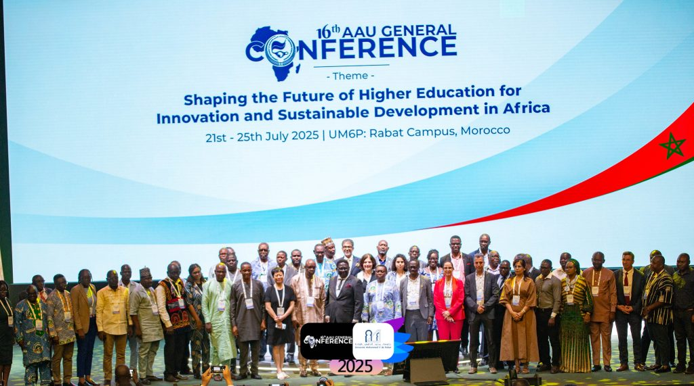
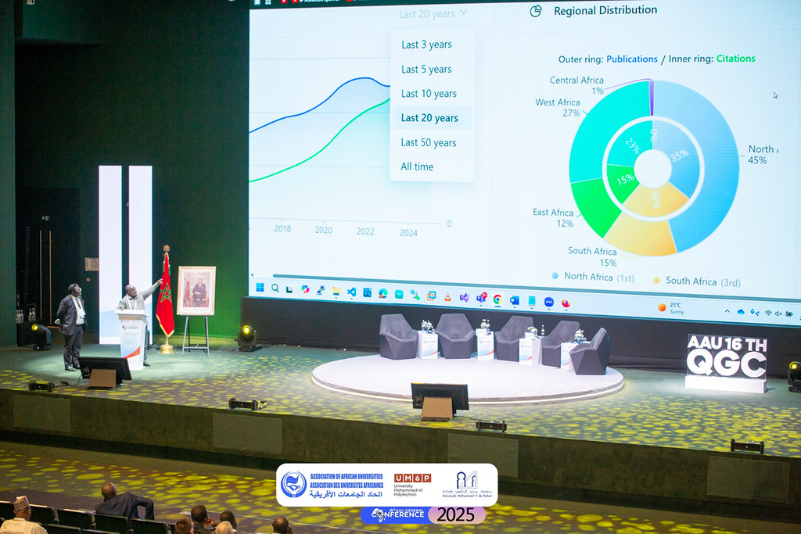
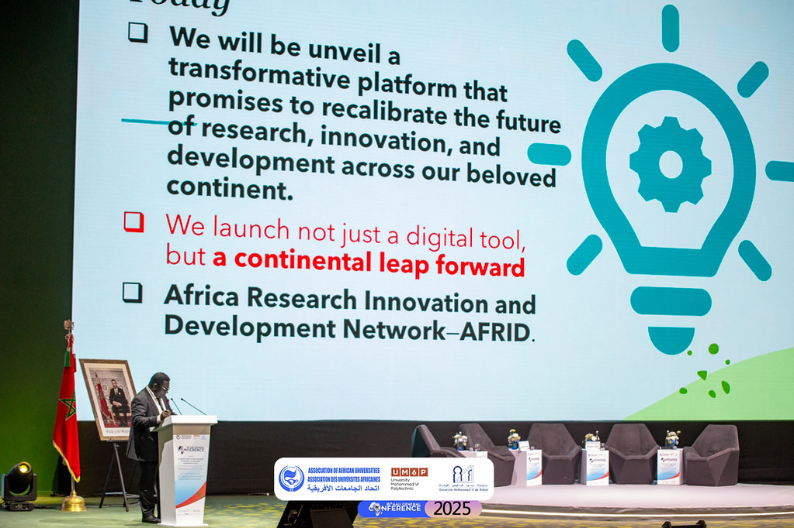
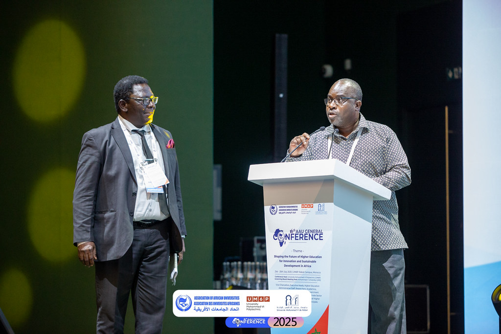
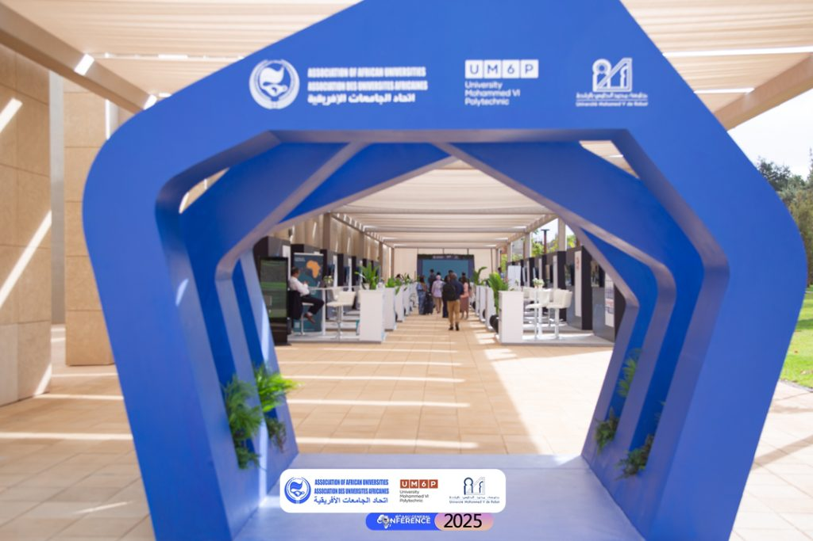
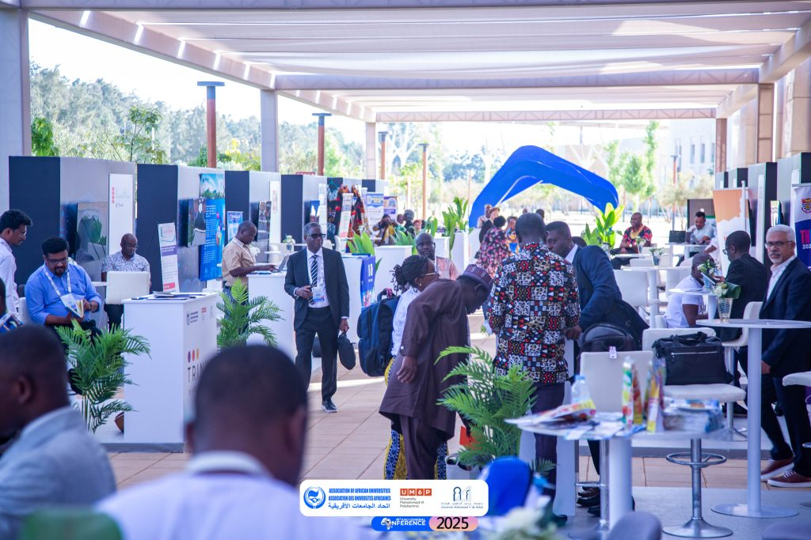
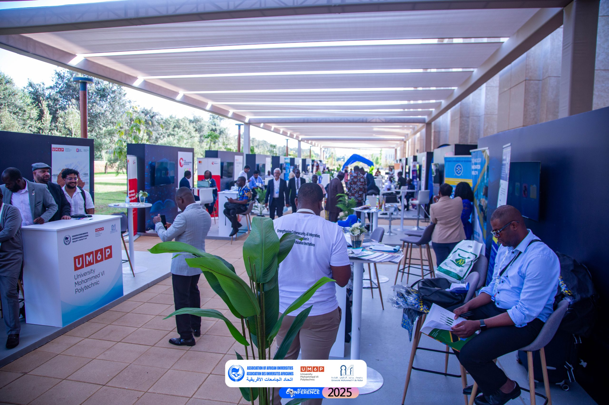
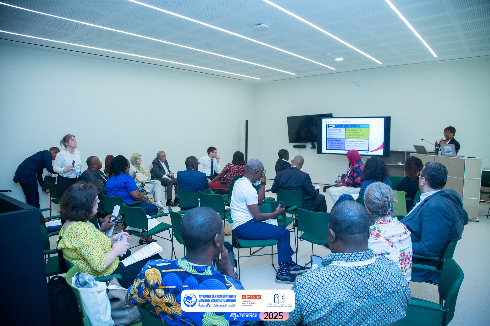

AAU 16th General Conference Charts Bold Future for African Higher Education
The Association of African Universities (AAU) has returned to its founding city, Rabat
in Morocco for its 16th Quadrennial General Conference, marking a historic homecoming 58 years after its
establishment in 1967. Close to 500 higher education thought leaders, including university vice-chancellors,
researchers, policymakers, industry players, and development partners, converged at the conference, held from
Monday, 21 July 2025 to today, Friday, 25 July 2025.
Hosted by University Mohammed VI Polytechnic (UM6P), the landmark conference, themed
Shaping the Future of Higher Education for Innovation and Sustainable Development in Africa,
spotlighted Africa's pressing education issues—from demographic surge
and digital transformation to equity and research sovereignty—while presenting bold, actionable solutions to
reengineer the continent's higher education systems for long-term, sustainable impact.
Setting the tone at the opening plenary, Prof. Hicham El Habti, President of UM6P, urged African universities
to transcend their traditional roles and act as "living laboratories" to drive the real-world change it is
seeking. "African universities must become engines of knowledge and innovation. Collaboration and resilience
are no longer optional—they are our lifelines," he emphasized.
AAU Unveils AfRID Network's Digital Platform to Revolutionalise Research Collaboration Across Africa

A transformative new chapter in African higher education and research was written today as the Secretary
General of the Association of African Universities (AAU), Professor Olusola Bandele Oyewole, officially
launched the African Research Innovation and Development (AFRID) Network digital platform during the
16th AAU Quadrennial Conference in Rabat, Morocco. The unveiling of the AFRID Network marks a significant
milestone in the continent's pursuit of a more interconnected, data-driven, and impactful research ecosystem.


Described as a groundbreaking initiative, the AFRID Network's platform is poised to dramatically reshape how
African researchers, institutions, and communities collaborate, measure progress, and respond to the
continent's most pressing challenges. At its core, AFRID is a digital infrastructure that combines powerful
data analytics, artificial intelligence, and interactive visualization to provide stakeholders with
unprecedented insights into the dynamics of academic research across Africa and beyond.
Leading lights in Africa's higher education honoured by the Association of African Universities

The AAU Higher Education Excellence Awards ceremony, held at the 16th Quadrennial General Conference at the
University Mohammed VI Polytechnique in Rabat, Morocco, celebrated visionary leaders shaping the future of
academia. From groundbreaking research to transformative educational initiatives, these honorees exemplify
innovation and dedication. Their inspiring contributions are setting new benchmarks in higher education, and
their stories promise a captivating glimpse into the possibilities of academic excellence and leadership.
Enhancing Cybersecurity Capacity in African Higher Education: ICT Directors Trained in CSIRT and Incident
Response

As cyber threats continue to rise in both complexity and frequency, so must African higher education
institutions (HEIs) be equipped with the necessary digital infrastructure, physical structures, and in-depth
knowledge to protect the cyber space. With this in mind, the Association of African Universities (AAU),
partnering with the Forum of Incident Response and Security Teams (FIRST), has organized a two-day
transformative learning workshop for ICT Directors from Africa's HEIs. Organized from July 19 to 20, 2025, this
insightful masterclass formed part of AAU's ongoing 16th Quadrennial General Conference in Rabat, Morocco.
Themed Building and Operationalizing Computer Security Incident Response Teams, the workshop convened ICT
directors from Africa's HEIs to learn, collaborate, and most importantly to be equipped with the necessary
skills and tools to effectively lead their respective institutions' cybersecurity initiatives.


In his opening remarks, FIRST's African Regional Liaison, Eric Akumiah, highlighted the rise of cyber threats
and cyber-attacks worldwide and how the Forum, by enhancing cooperation among security teams, was poised to
tackle the menace. He revealed the organization's ongoing efforts under the Africa Cyber
Programme, a
UK-funded initiative, to support cybersecurity capacity building across the continent.
Forging Connections: Pre-General Conference Workshop Highlights Role of Communications and Partnerships in
Policy Reforms

Ahead of the 16th Quadrennial General Conference of the Association of African Universities (AAU), a two-day
pre-conference workshop was held from July 19 to 20, 2025, at the University Mohammed V (UM5) of Rabat, Morocco.
Under the theme "Driving Policy Through Research, Communication, and Partnerships for Institutional
Transformation," the workshop brought together academics, researchers, institutional leaders, and policy
influencers from across Africa to explore how research, communication, and strategic partnerships could inform
institutional transformation across Africa.


The workshop featured a series of interactive sessions led by three facilitators, Dr. Konosoang Sobane, Ing.
Ilyas Azzioui, and Prof. Sanaa Zebakh. Participants engaged in practical exercises, case studies, and
collaborative group work to equip themselves with tools and frameworks to drive change in their institutions.
The sessions covered topics such as crafting of policy briefs, science-policy communication, and public-private
partnerships (PPPs), all tailored to the African higher education context.
Innovation on Display: African HEIs Shine at AAU Conference Exhibition

The 16th General Conference of the Association of African Universities (AAU) featured a dynamic exhibition
showcasing the latest innovations, research breakthroughs, and strategic partnerships of Africa's premier
universities and partner institutions. Held at the University Mohammed VI Polytechnic (UM6P) exhibition
pavilion, the exhibition served as a vibrant centerpiece of the conference, highlighting the diversity of
African academic excellence and the continent's commitment to innovation and collaboration.
Rows of colorful, elegantly decorated booths transformed the university's central hall into a living gallery.
From Ghana to South Africa, Ethiopia to Tunisia, universities brought to life the diversity of African academic
excellence. The exhibition was as much about cultural pride as it was about innovation—featuring prototypes
based on indigenous knowledge, renewable energy solutions, digital learning platforms, brochures of flagship
graduate programs, and looping documentaries capturing vibrant campus life and success stories.


"It's inspiring," said Ziblim Alhassan, a delegate from the University for Development Studies, Ghana. "You
walk around the exhibition area and realize that Africa is not behind. We're just not telling our stories
enough. This exhibition is changing that."
Driving Innovation Through Collective Intelligence in African Higher Education

As African universities navigate growing expectations to drive innovation, address development challenges, and
prepare future-ready graduates, institutional transformation is no longer optional. It is both essential and
strategic. At the 16th Quadrennial General Conference of the Association of African Universities (AAU), holding
in Rabat, Morocco, from July 21 to 25, 2025, two presentations from Professor Lex Paulsen and Dr. Rachid Serraj
of University Mohammed VI Polytechnic (UM6P) offered compelling insights into how universities can lead this
transformation.
The first, delivered by Professor Paulsen, introduced UM6P’s internal planning model, Vision 2030, which seeks
to redefine institutional strategy through inclusive, bottom-up engagement. The second presentation, made by Dr.
Serraj, proposed a continent-wide framework grounded in collective intelligence to foster collaboration,
innovation, and long-term impact.
AAU-UNESCO Executive Leadership Training at 16th AAU General Conference in Rabat, Morocco

The Association of African Universities (AAU), in collaboration with UNESCO, launched its Executive Leadership
Training Programme on Sunday, July 20, 2025, at the UNESCO Regional Office for the Maghreb in Rabat, Morocco.
The venue symbolizes UNESCO’s commitment to regional collaboration and leadership development in African higher
education.
This full-day session marked the beginning of a transformative initiative aimed at equipping senior leaders in
African higher education institutions with the tools, knowledge, and networks necessary to lead digital
transformation and institutional change.
Communiqué of the 16th General Conference of the Association of African Universities
The Association of African Universities (AAU) held its 16th Quadrennial General Conference from July
21st to
25th, 2025, bringing together close to 500 delegates—,including university vice-chancellors, researchers,
policymakers, industry players, anddevelopment partners —to chart the future of African higher education.
Themed “Shaping the Future of Higher Education for Innovation and SustainableDevelopment in Africa,” the
conference was co-hosted by the University Mohammed VI Polytechnic (UM6P). Across 12 plenary sessions,
stakeholder dialogues and parallel sessions, participants tackled the continent’s most pressing higher
education
challenges andopportunities, such as demographic boom, research sovereignty, AI adoption, qualityassurance, and
the inclusion of marginalized youth in higher education.